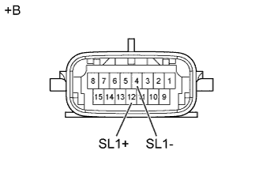
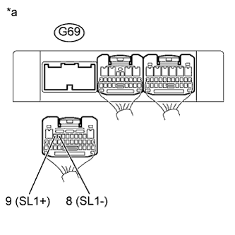

DTC P0748 Электрическая часть электромагнитного клапана регулировки давления "A" (электромагнитного клапана переключения передач SL1) |
| Код DTC | Условие обнаружения DTC | Неисправный участок |
| P0748 | TCM проверяет наличие обрыва или короткого замыкания в цепи электромагнитного клапана переключения передач SL1 во время движения и переключения между 4-й и 5-й передачами (логика диагностирования за 1 поездку). Скважность выходного сигнала составляет 100%.
|
|
| Передача, заданная командой TCM | 1-я | 2-я | 3-я | 4-я | 5-я |
| Электромагнитный клапан переключения передач SL1 | OFF (ВЫКЛ) | OFF (ВЫКЛ) | OFF (ВЫКЛ) | OFF (ВЫКЛ) | ON (ВКЛ) |
| 1.ПРОВЕРЬТЕ ЖГУТ ЭЛЕКТРОПРОВОДКИ ТРАНСМИССИИ (ЭЛЕКТРОМАГНИТНЫЙ КЛАПАН ПЕРЕКЛЮЧЕНИЯ ПЕРЕДАЧ SL1) |
|  |
Отсоедините разъем C30 жгута электропроводки трансмиссии.
Измерьте сопротивление в соответствии со значениями, приведенными в таблице ниже.
| Контакты для подключения диагностического прибора | Условие | Заданные условия |
| 12 (SL1+) - 4 (SL1-) | 20°C (68°F) | 5,0-5,6 Ом |
| 12 (SL1+) - масса | 20°C (68°F) | 10 кОм или более |
| 4 (SL1-) - масса | 20°C (68°F) | 10 кОм или более |
| *a | Устройство с неподсоединенным жгутом проводов (жгут электропроводки трансмиссии) |
|
| ||||
| OK | |
| 2.ПРОВЕРЬТЕ ЖГУТ ПРОВОДОВ И РАЗЪЕМ (ЖГУТ ЭЛЕКТРОПРОВОДКИ ТРАНСМИССИИ – TCM) |
|  |
Отсоедините разъем G69 TCM.
Измерьте сопротивление в соответствии со значениями, приведенными в таблице ниже.
| Контакты для подключения диагностического прибора | Условие | Заданные условия |
| G69-9 (SL1+) - G69-8 (SL1-) | 20°C (68°F) | 5,0-5,6 Ом |
| G69-9 (SL1+) - масса | 20°C (68°F) | 10 кОм или более |
| G69-8 (SL1-) - масса | 20°C (68°F) | 10 кОм или более |
| *a | Вид сзади разъема со стороны жгута проводов (к TCM) |
|
| ||||
| OK | ||
| ||
| 3.ПРОВЕРЬТЕ ЭЛЕКТРОМАГНИТНЫЙ КЛАПАН ПЕРЕКЛЮЧЕНИЯ ПЕРЕДАЧ SL1 |
 |
Снимите электромагнитный клапан переключения передач SL1.
Измерьте сопротивление в соответствии со значениями, приведенными в таблице ниже.
| Контакты для подключения диагностического прибора | Условие | Заданные условия |
| 1 - 2 | 20°C (68°F) | 5,0-5,6 Ом |
Подайте в электромагнитный клапан переключения передач напряжение аккумуляторной батареи 12 В и убедитесь в том, что клапан приводится в движение, издавая характерный для этого звук.
| Условия измерений | Заданные условия |
| Клапан приводится в движение, издавая характерный звук. |
| *a | Устройство с неподсоединенным жгутом проводов (электромагнитный клапан переключения передач SL1) |
|
| ||||
| OK | ||
| ||